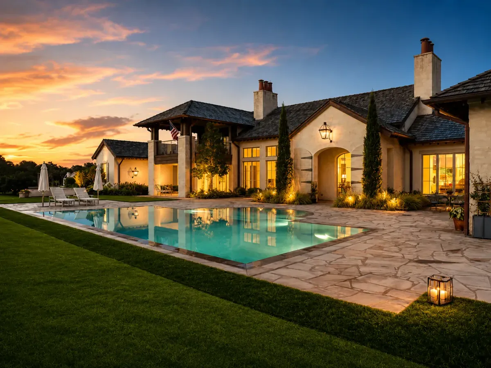
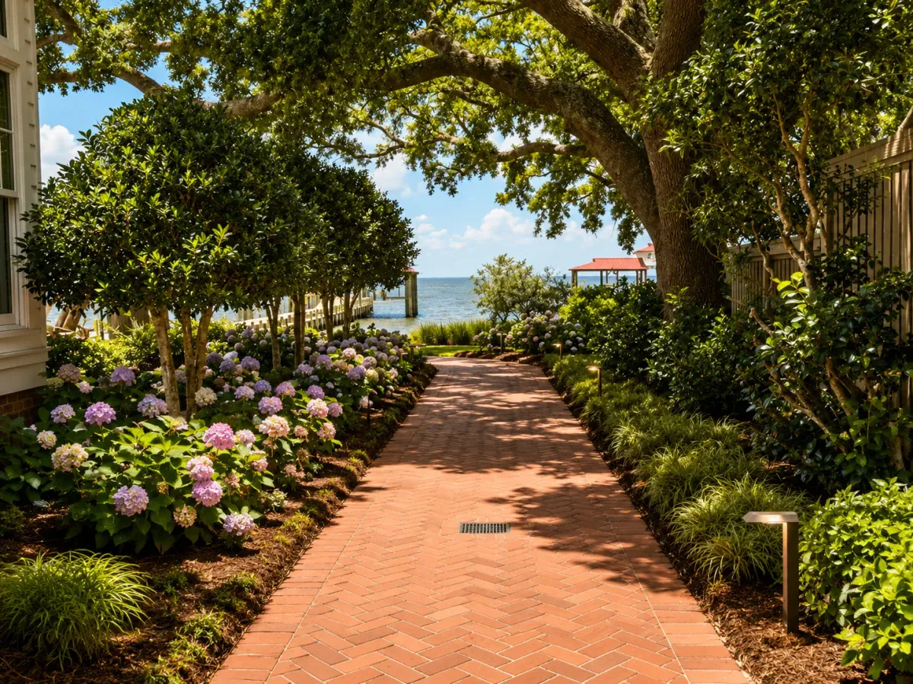
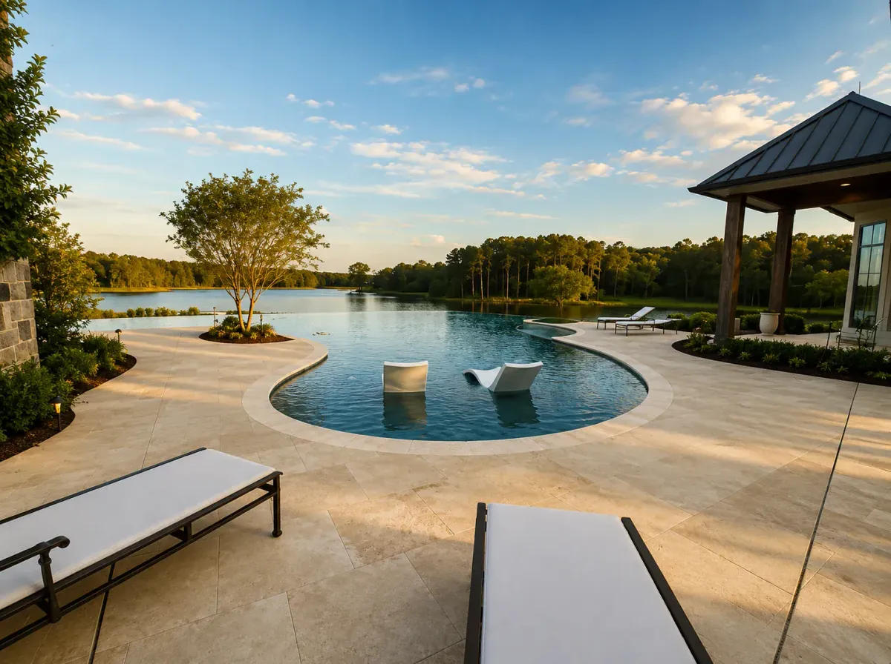
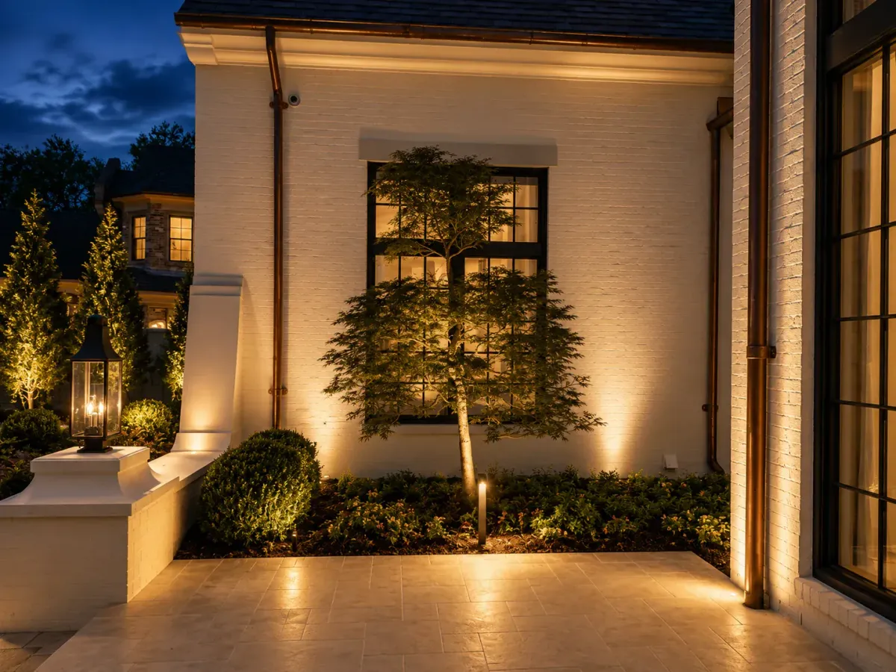
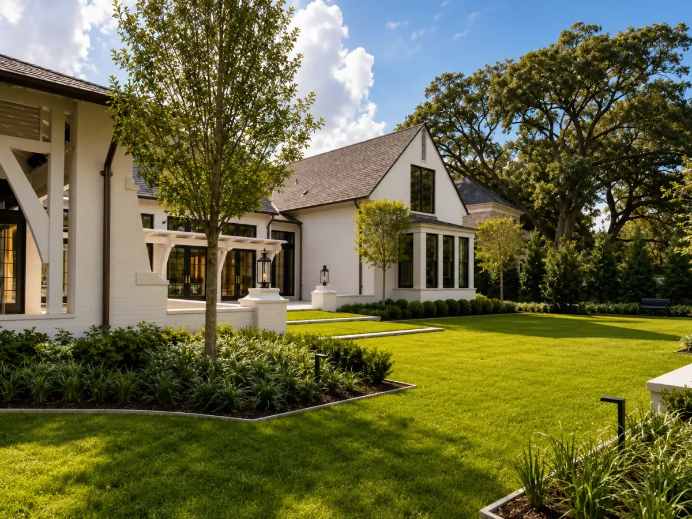
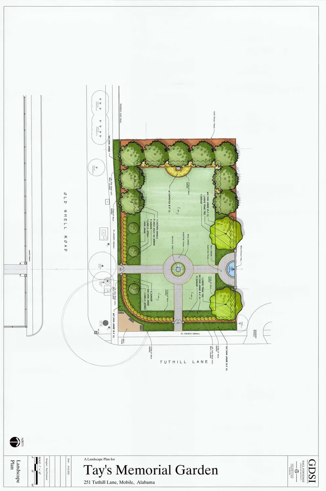
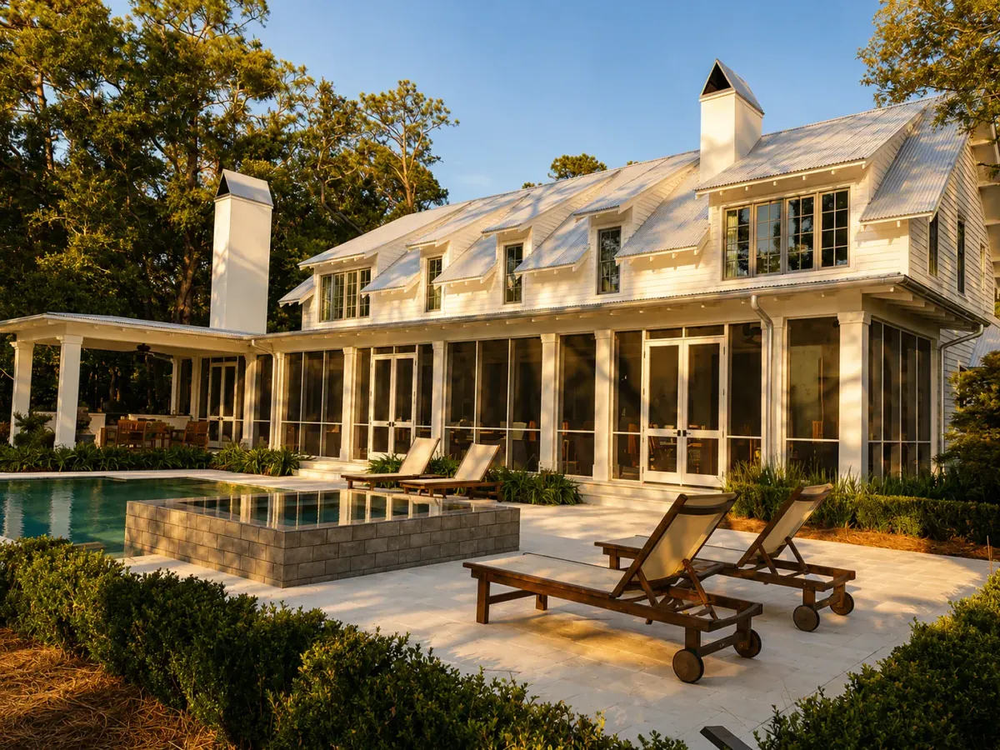

Residential Landscape Design & Construction
Gardens that settle
into their surroundings.
Designing and building visually stunning, functional outdoor spaces along the Gulf Coast since 2002.
The practice
We craft residential landscapes that feel inevitable — where planting, water, stone and light are resolved together, and the finished garden seems to have grown from the ground it stands on.
Services
What we design & build.
From a single planted courtyard to the grounds of an entire estate — a complete landscape practice under one roof.






Landscape architecture
Hand-rendered plans.
Named residential projects, drawn as measured design studies. Open any project to explore the full plan and zoom into the detail.
Built environments
Completed outdoor spaces.
A gallery of finished luxury landscapes, grouped by the spaces we build. Filter by type, or open any image to explore.
No work in this category yet.
Process
From first walk to full bloom.
Every project follows the same considered path — patient at the start, exacting through construction, and attentive long after planting.
-
01
Enquiry & brief
We begin with the property and the people — how the garden will be lived in, and what it should become.
-
02
Reading the site
Light, grade, soil, drainage, prevailing views and existing planting are surveyed before a line is drawn.
-
03
Concept & masterplan
A measured plan sets the structure, circulation and planting rhythm for the whole property.
-
04
Design development
Materials, water, lighting and planting palettes are resolved in detail and rendered for review.
-
05
Construction
Hardscape, water features and planting are built with careful craft and close supervision.
-
06
Establishment
The garden is settled in and tended so that, in time, it reads as though it always belonged.
The studio
Rooted on the Gulf Coast.
Operating in the Gulf Coast area since 2002, we at GDSI are experts in residential landscape design and construction. We pride ourselves on our ability to craft visually stunning and functional outdoor spaces that seamlessly blend into the natural surroundings.
We work end to end — reading a site, drawing the plan, and building the landscape — so that planting, water, stone and light arrive as one considered whole.
- Since 2002Designing & building
- Gulf CoastWhere we work
- ResidentialOur focus
Enquiries
Begin a garden.
Tell us about your property and what you would like it to become. We design and build residential landscapes across the Gulf Coast, and we read every enquiry personally.
- Practice
- Garden Design Solutions, Inc.
- Since
- 2002
- Region
- Gulf Coast
- Focus
- Residential landscape design & construction